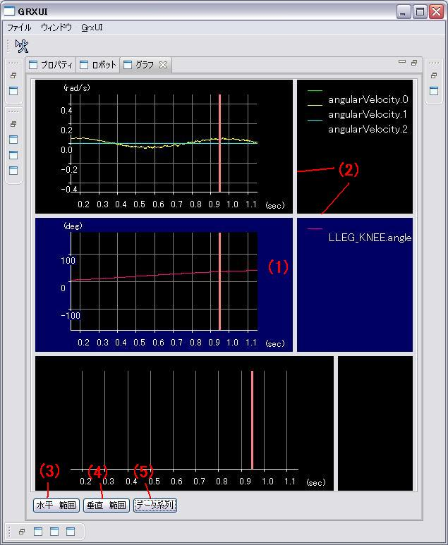
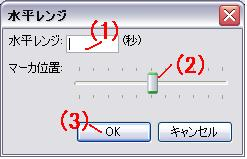
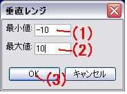
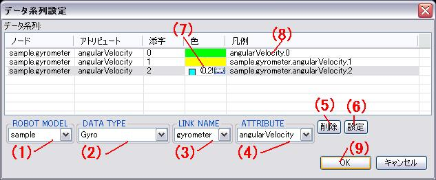

Graph View
Here we explain various elements that compose Graph View. Windows settings are taken for
following example.

- Clicks to chooses a graph.
- If bar is dragged, the width of a graphical representation and height are changed.
- The range of the horizontal axis of all the graphs is set up.

- The range of time to display is set up.
- The position of a red line marker is set up.
- A setup is reflected in a graph.
- The range of the vertical axis of the chosen graph is set up.

- The maximum of a graph is set up.
- The minimum of a graph is set up.
- A setup is reflected in a graph.
- The contents displayed on the chosen graph are set up.

- A model is chosen.
- The kind of sensor is chosen.
- A sensor is chosen.
- A data item is chosen.
- The selected item is deleted.
- The set-up item is added.
- The color of a graph is chosen.
- The name of a graph is edited.
- A setup is reflected in Graf.